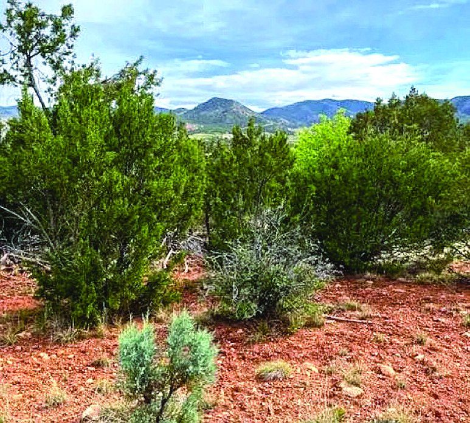
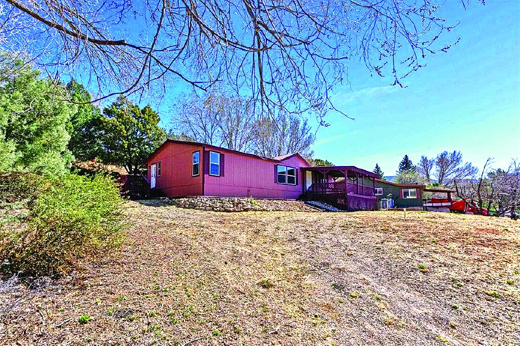
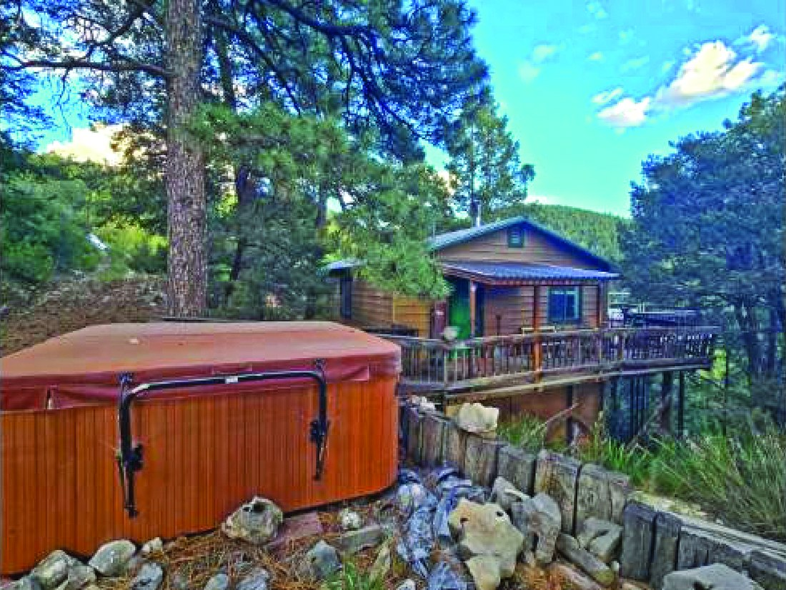
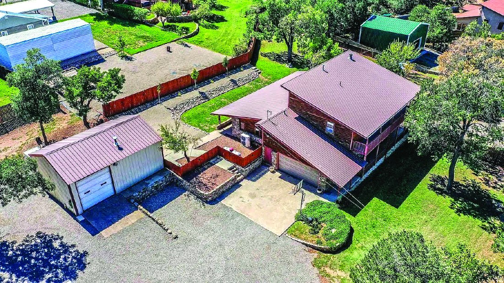
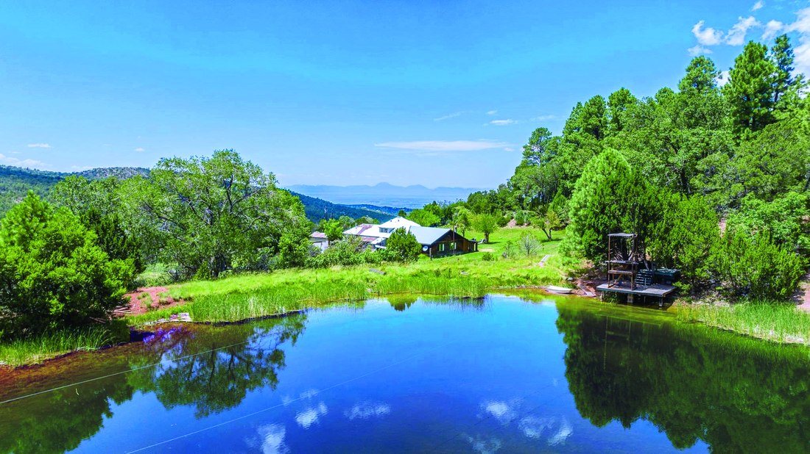
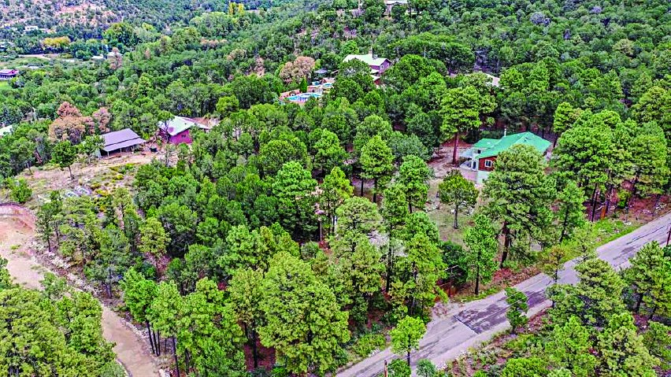
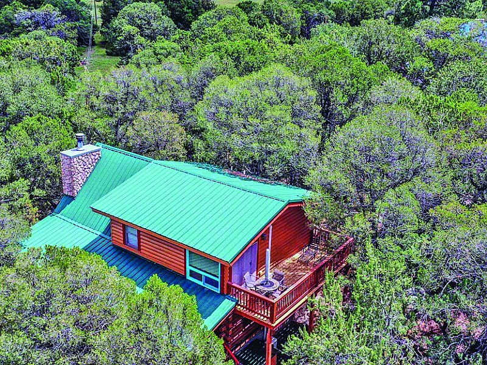

$95,000 Property in High Rolls High Rolls, New Mexico MLS #172468
29 Orchard Lp
$229,000
| Price | $229,000 |
|---|---|
| Bedrooms | 3 |
| Bathrooms | 2 |
| Address | 29 Orchard Lp |
| Area | High Rolls, New Mexico |
| Listed by | Future Real Estate |
| Print edition | October 2026 Otero County Edition, page 10 |
About this property
Nestled in the scenic beauty of Haynes Canyon in High Rolls, this 3-bedroom, 2-bath double-wide manufactured home offers peaceful mountain living with unforgettable views of the Tularosa Basin. Surrounded by the natural beauty of the Sacramento Mountains, the property provides a perfect blend of comfort and scenery of the Tularosa Basin. Contact Debbie Loper at 575-430-7044. NLS# 172250
Interested in this property?
Debbie Loper
Phone: 575-430-7044
Future Real Estate
Please contact the listing agent or company directly. The Real Estate Roundup is a publisher and does not show or sell properties.
Listing details and photo reproduced from the October 2026 print edition of The Real Estate Roundup (page 10), as printed. Prices and availability can change after publication — confirm with the listing agent.
More Homes

$265,000 17 Skyline Trl, High Rolls Mountain Park, NM 2 bd High Rolls, New Mexico
$664,900 36 Old Railroad, High Rolls, NM 3 bd · 2 ba High Rolls, New Mexico MLS #171665
$2,200,000 163 Karr Canyon Rd 126.0 acres High Rolls, New Mexico MLS #172448
$454,000 73 Cider Mill Farm 2.5 acres High Rolls, New Mexico MLS #171735
$515,000 23 Mountain Park Rd 78.0 acres High Rolls, New Mexico MLS #172974